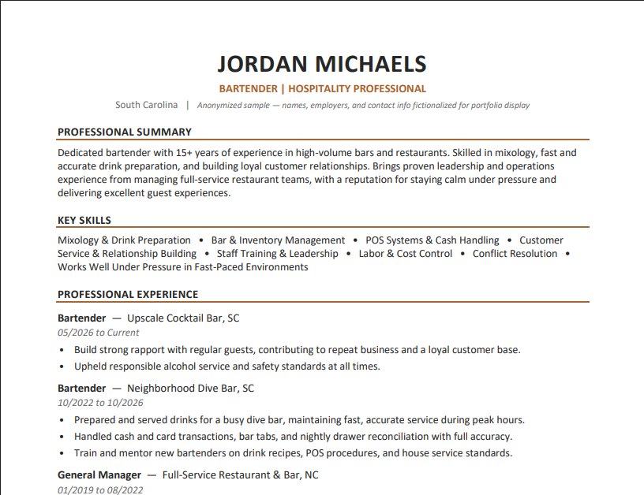
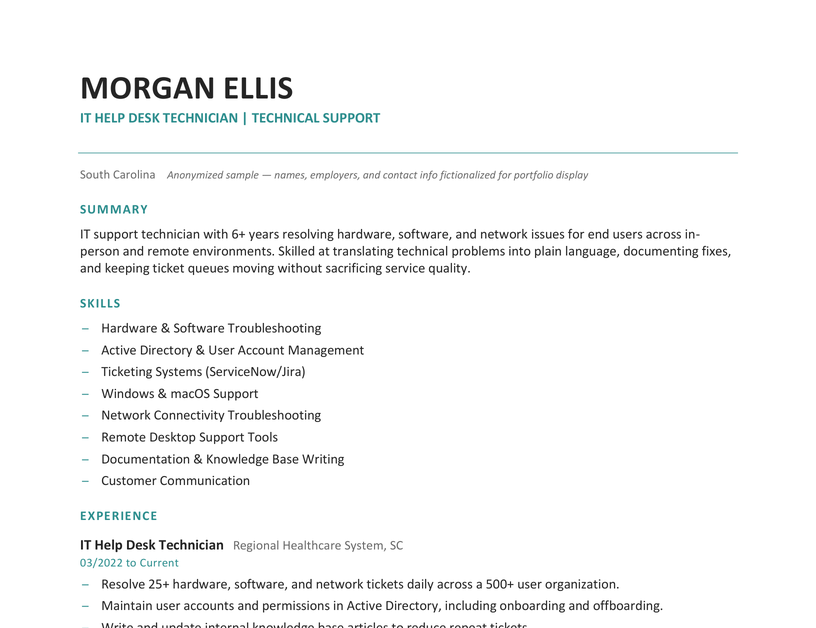
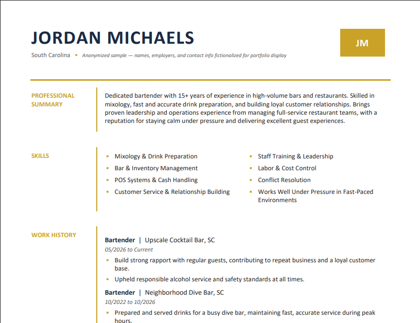
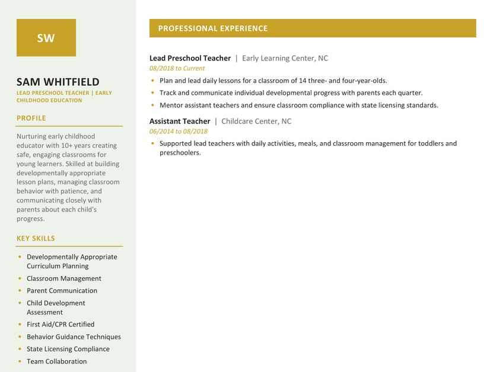
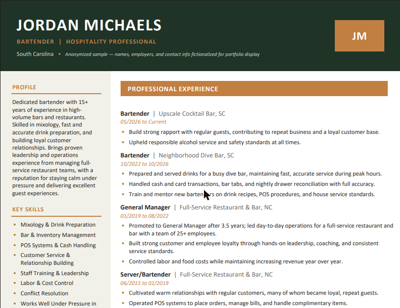
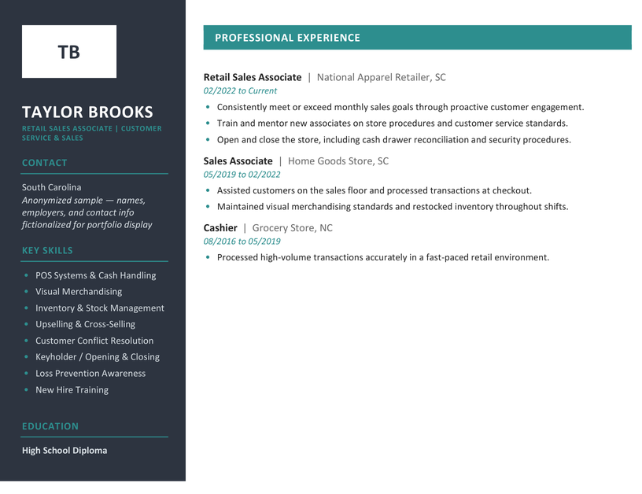
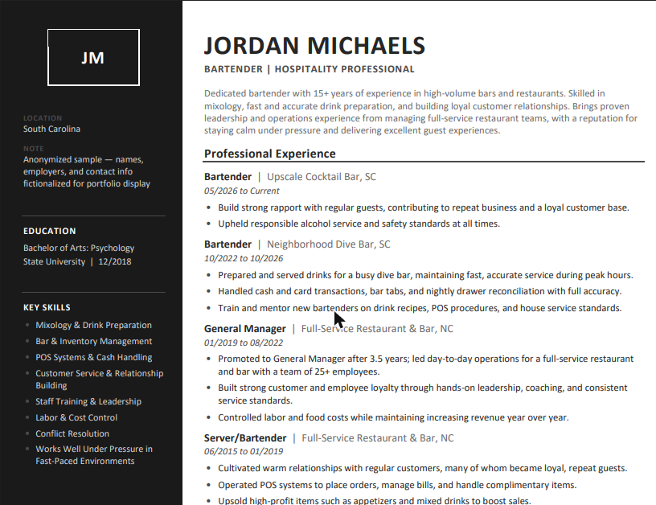

Classic Clean
The safest bet for online job applications — start here if you're submitting through a company's career portal. Simple, no-frills, and reads perfectly no matter what system a company uses to screen resumes.
I'll build it for you — written to match the job you're going for, in a layout built to clear ATS screening when that's what you need. Tell me what you need, I'll handle the rest. You don't need a computer or a printer.
Three steps. No tech skills required on your end.
1
Just want a fresh look for a resume you already like the wording on? Or help finding the right words for a specific job? Just email me and we'll go from there.
2
Choose a style swap or a tailored rewrite (see pricing below). Want a say in how it looks? Browse the styles and tell me which one you like — otherwise I'll pick one that fits your field.
3
I'll write it, design it, and send it back to you ready to go — usually within a few days, sometimes the same day.
Most of these are ATS-friendly — a couple lean on decorative sidebars that read best once a human's looking at them. Not sure which is safest for where you're applying? Start with Classic Clean below, or just ask.

The safest bet for online job applications — start here if you're submitting through a company's career portal. Simple, no-frills, and reads perfectly no matter what system a company uses to screen resumes.

Clean with a touch of color. Professional without feeling stiff — a good all-around choice.

The layout most hiring managers expect to see. Straightforward and easy to scan in a few seconds.

A gentle color panel down the side. Friendly and approachable without being loud.

A strong header up top makes a confident first impression. Good for standing out in a stack of applications.

A full color side panel for a more striking look. Great when you want your resume to be memorable.

Clean lines and clear organization. Feels put-together and serious — good for management and leadership roles.
Tailored wording help for the job you're going for — pick one job focus or several.
$20
I word and tailor your resume for the specific job you're going for, plus 1-2 rounds of feedback and revisions until it's right.
$30
Applying to more than one kind of role? I'll tailor and word separate versions for different job focuses within your field, each with 1-2 rounds of feedback and revisions.
Already happy with your wording and just want a fresh look? I'll do a Style Swap — your existing content dropped into a new layout, no rewriting — for $10. Just ask.
Every tier comes in the layout and color of your choice. Not sure what look you want? Use Check a template above to preview any combo before you decide.
Prefer to build it yourself? I built the whole template system and put it free and open on GitHub — if you (or an AI coding tool) can run it, go for it, no charge. These prices are for the done-for-you service: the wording help, the back-and-forth, and me handling the parts most people get stuck on.
That's fine — that's exactly who this is for. We can do everything over email. Your finished resume comes as a PDF you can open and show right from your phone.
Most people don't, at first. I'll ask you questions about your work history and help turn it into something that actually sounds good — you don't have to write anything yourself.
Yes — I built the whole system myself and put it free and open on GitHub. If you're comfortable with code (or have an AI coding assistant help you), you can run it yourself at no cost. If that's not really your thing, that's exactly what the paid service is for — see pricing below.
See the pricing section above — $20 for a tailored rewrite with feedback rounds included, or $30 if you want separate tailored versions for more than one job focus. Just want a fresh look with your existing wording? That's a $10 Style Swap — ask.
Once we've talked through your info and picked a style, I'll send a request on Venmo (@Skylar-Knapp) or Cash App ($SKnapp1991) — whichever you already use. No cards, no accounts to set up.
I'll email it to you as a ready-to-use file at resumesbyskylar@gmail.com — easy to open, print, or attach to a job application.
Email and let's get your resume done. I usually reply within a few hours.
Pick a layout and a color — this is the same layout/color combo you'd get, just with sample info instead of yours.
Layout
Color